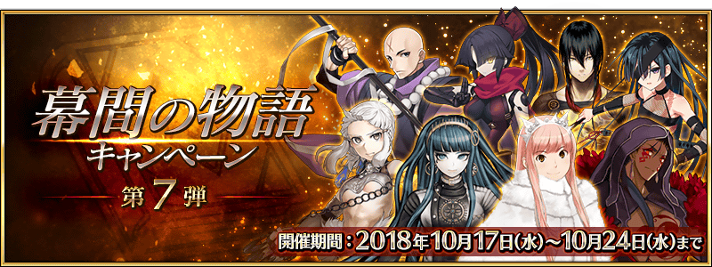

以期間限定舉辦「幕間物語宣傳活動 第7彈」。
宣傳活動舉辦中所有Servant幕間物語的AP消耗量變成1/2！
藉此機會滿足開放條件，通過喜愛Servant的物語吧！
◆舉辦期間◆
2018年10月17日(三) 17:00～10月24日(三) 11:59
◆對象關卡◆
所有的幕間物語
※也包含自2018年10月17日(三) 17:00開放的幕間物語。


◆開放時間◆ 2018年10月17日(三) 17:00～
◆對象Servant◆
・庫・夫林〔Alter〕
・克麗奧佩脫拉
・女王梅芙(Rider)
・Assassin・樂園
・黃金國的Berserker
・加藤段藏
・新宿的Assassin
・寶藏院胤舜
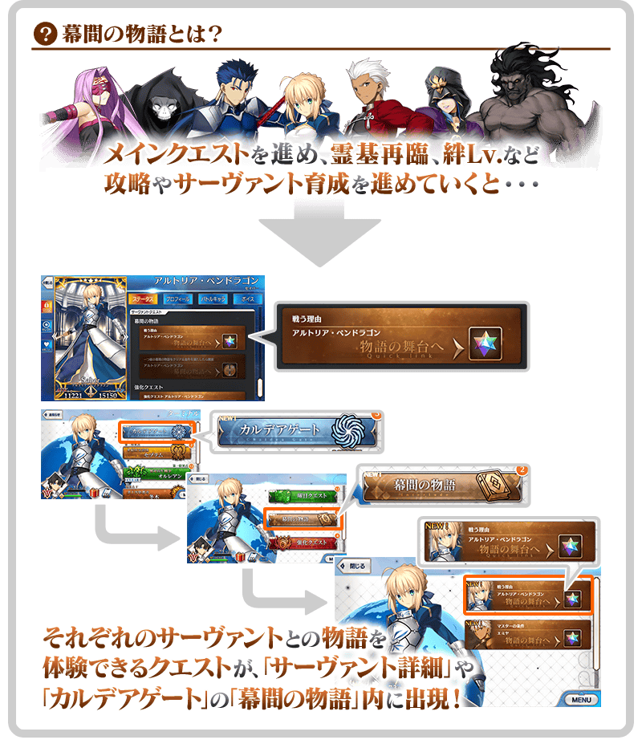
|
◆關卡通過報酬◆ |
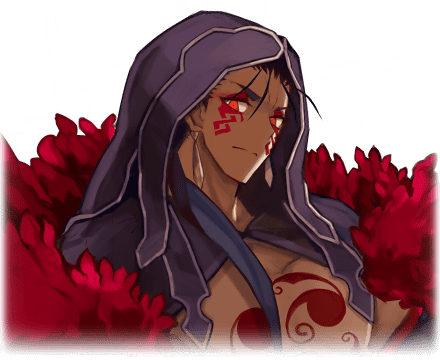 |
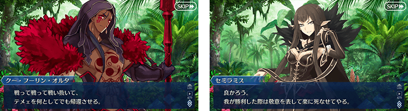
|
◆關卡通過報酬◆ |
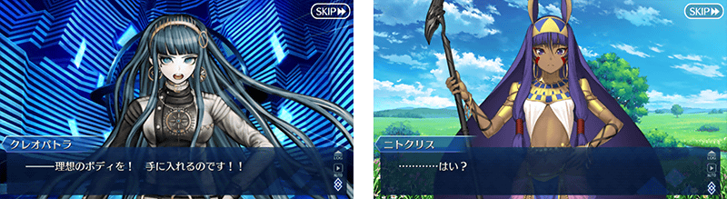
|
◆關卡通過報酬◆ |
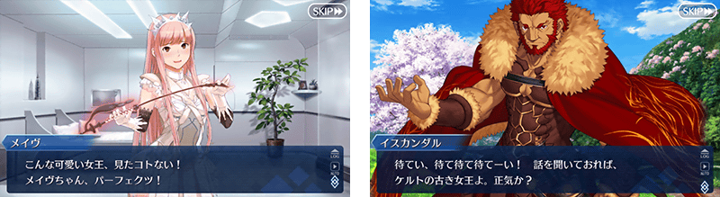
| 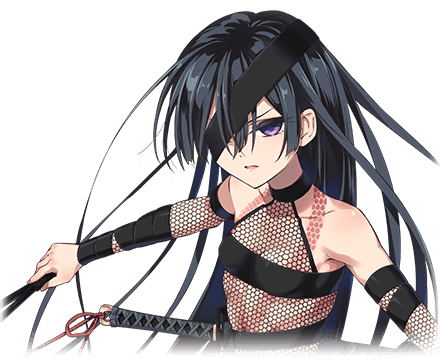 |
◆關卡通過報酬◆ |

|
◆關卡通過報酬◆ |
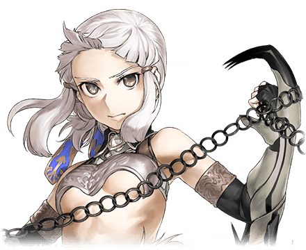 |
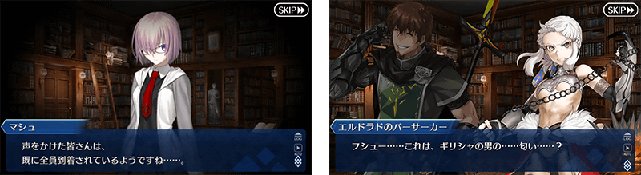
|
◆關卡通過報酬◆ |
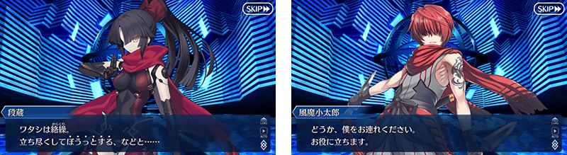
|
◆關卡通過報酬◆ |
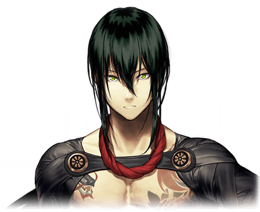 |
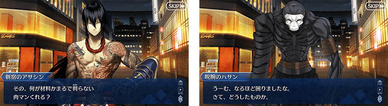
|
◆關卡通過報酬◆ |
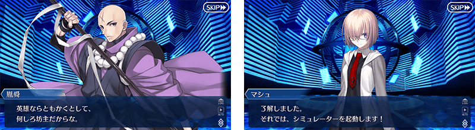
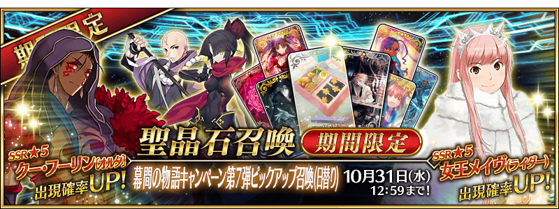
◆「幕間物語宣傳活動第7彈Pick Up召喚(每日交替)」期間◆
期間:2018年10月17日(三) 17:00～10月31日(三) 11:59
舉辦期間限定「幕間物語宣傳活動第7彈Pick Up召喚(每日交替)」！
本次在「幕間物語宣傳活動 第7彈」關聯的「★5(SSR)女王梅芙(Rider)」「★5(SSR)庫・夫林〔Alter〕」以每日交替Pick Up，「★4(SR)加藤段藏」「★3(R)寶藏院胤舜」常駐Pick Up！
◆有關Servant的注意◆
※女王梅芙(Rider)、庫・夫林〔Alter〕、加藤段藏、寶藏院胤舜在Pick Up期間結束後仍會在故事召喚被抽出。
※Pick Up期間中，女王梅芙(Rider)、庫・夫林〔Alter〕就算通過第五特異點前也能入手。
※Pick Up期間中，加藤段藏就算通過亞種特異點Ⅲ前也能入手。
※請注意「幕間物語宣傳活動第7彈Pick Up召喚(每日交替)」做為每日交替，女王梅芙(Rider)、庫・夫林〔Alter〕就算是Pick Up期間中也有不會被抽出的日子。
詳情請在聖晶石召喚畫面左下的召喚詳細確認。
Pick Up期間中，Pick Up Servant的出現機率提升！
10次召喚中確定1張★4(SR)以上和確定1位★3(R)以上的Servant！
※確定★4(SR)以上包含Servant和概念禮裝。
| 每日交替Pick Up期間 | 每日交替Pick Up內容 |
|---|---|
| 10月17日(三) 17:00～ 10月19日(五) 22:59 |
女王梅芙(Rider) 庫・夫林〔Alter〕 |
| 10月19日(五) 23:00～ 10月21日(日) 22:59 |
女王梅芙(Rider) |
| 10月21日(日) 23:00～ 10月23日(二) 22:59 |
庫・夫林〔Alter〕 |
| 10月23日(二) 23:00～ 10月25日(四) 22:59 |
女王梅芙(Rider) 庫・夫林〔Alter〕 |
| 10月25日(四) 23:00～ 10月27日(六) 22:59 |
女王梅芙(Rider) |
| 10月27日(六) 23:00～ 10月29日(一) 22:59 |
庫・夫林〔Alter〕 |
| 10月29日(一) 23:00～ 10月31日(三) 11:59 |
女王梅芙(Rider) 庫・夫林〔Alter〕 |
※請注意會以每日交替變更Pick Up的Servant。


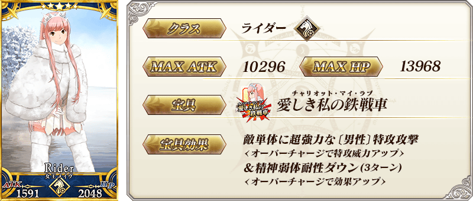


※上述「★5(SSR)庫・夫林〔Alter〕」的卡面為靈基再臨第2階段。


※上述「★3(R)寶藏院胤舜」的卡面為靈基再臨第2階段。

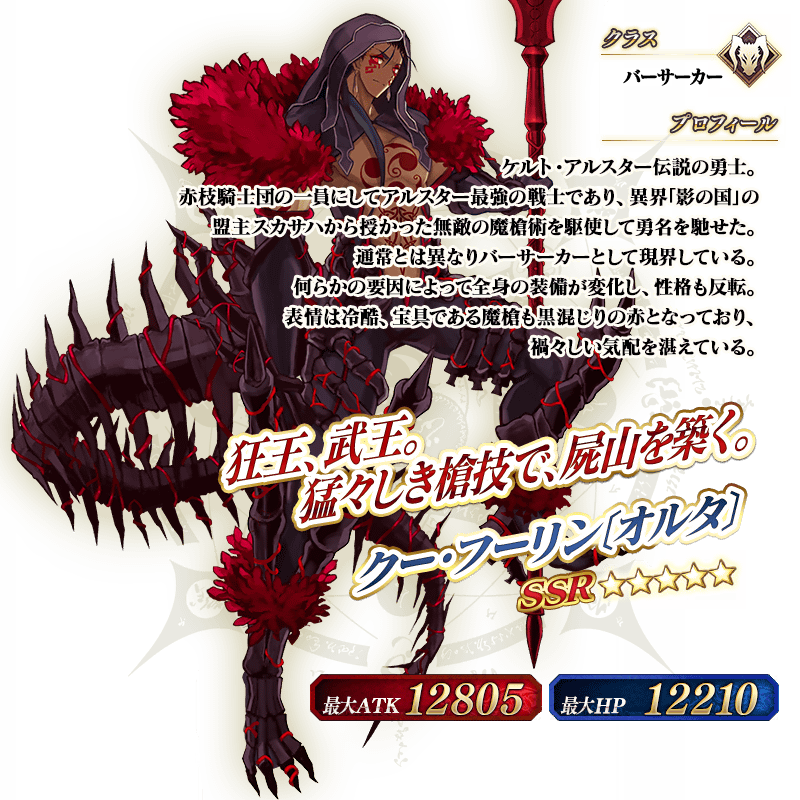
※上述介紹Servant「★5(SSR)庫・夫林〔Alter〕」的立繪為靈基再臨第2階段。
介紹女王梅芙(Rider)、庫・夫林〔Alter〕、加藤段藏的寶具演出！
在「Fate/Grand Order」官方網站內的公告中，公開了「★5(SSR)女王梅芙(Rider)」「★5(SSR)庫・夫林〔Alter〕」「★4(SR)加藤段藏」的寶具演出。敬請確認。